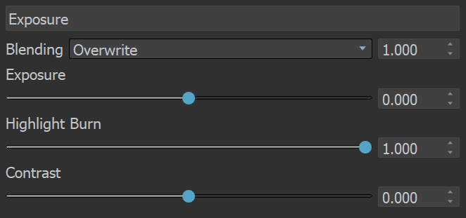
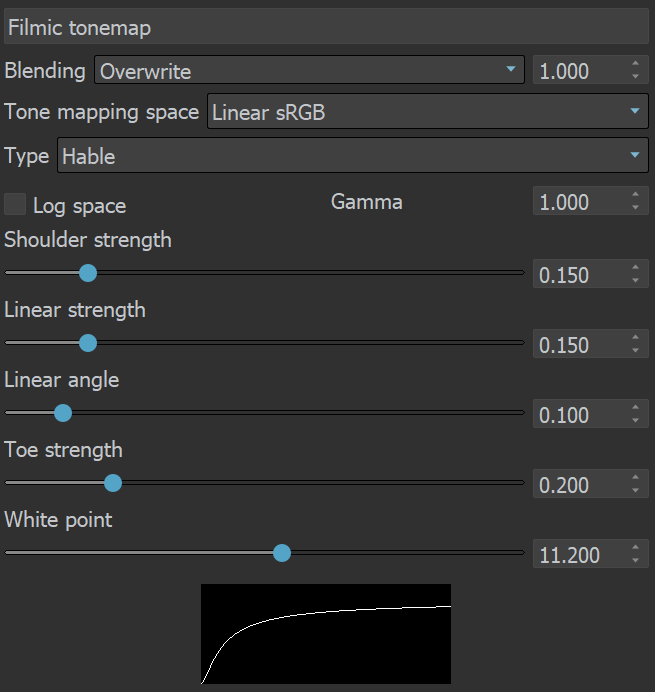

Layers
This page contains information on the Layers panel in the new V-Ray Frame Buffer.
Overview
The Layers panel in New V-Ray Frame Buffer provides a new powerful workflow for making adjustments to your rendered image. You can bring out render elements and compose them together with individual color corrections in the panel's Composite mode, or deconstruct light contribution in the scene and fine-tune each light individually in the completed render using the VRayLightMix mode. You can also color correct the final render just like you were able to do in the previous version of VFB.
New VFB is available in 3ds Max 2018 or later. Older 3ds Max versions only support the previous V-Ray VFB .
UI Path: ||V-Ray Frame Buffer|| > Layers
Layers Menu
Commands available for the Layers panel are located at the top of the panel. Press on the icons to see the expanded list of commands for the stacked buttons.

|
|
Creates a layer. Multiple layers of the same type can be added. Folder - Allows grouping multiple layers in folders; |
|
|
Deletes the selected layer(s). |
|
|
Saves a layer tree preset. |
|
|
Loads a layer tree preset. |
|
|
Quick access to custom layer presets. You must set the path to it in the VFB Settings. |
|
|
Undo various actions related to layers such as create, delete, reorder or modify a layer. |
|
|
Redo various actions related to layers such as create, delete, reorder or modify a layer. |


|
Command |
Description |
|
Reset |
Resets all changes done to the selected layer. |
|
Save |
Saves the layer as a preset. |
|
Load |
Loads a preset for the selected layer. |
|
Delete |
Deletes the selected layer. |
|
Save all CCs as LUT |
Bakes all the color corrections to a LUT file. It can be used with RMB on a Display Correction layer and saves only the corrections in its section, but ignores their masks. |
|
New Layer |
Creates a new layer. |
|
Duplicate |
Duplicates the selected layer. |
|
Blend Modes |
Specifies how the selected layer blends with the result from all layers below it. |
Color correction layers like Exposure and White Balance can be applied to a single layer instead of the entire composite.
You can do that by selecting a layer and then adding a new correction or by dragging the correction layer to another layer until an arrow icon appears.
The Stamp, Display Correction, Sharpen/Blur, Denoiser, Lens Effects and Source layers are listed in the Layers panel by default to any rendered image. Their order cannot be changed.
Layers can be disabled from the visibility icon (  ), reordered, nested, stacked in folders, etc. Disabled layers are indicated by the
), reordered, nested, stacked in folders, etc. Disabled layers are indicated by the  icon.
icon.
Corrections are applied from the bottom to the top, except for nested layers, which are executed after their parent.
Color corrections and the denoiser channel are saved in the output image just like they are applied in the VFB.
Adjustments made to the Display Correction layer are only applied for preview purposes in the VFB. Display corrections are usually saved for 8-bit image formats like JPEG and PNG and not to EXR files, which are expected to be linear.
Layers are only saved to .exr and .vrimg files written through V-Ray's own output. The output in Render Setup > Common tab is written by 3ds Max so .exr files saved from there do not have Layers saved.
When saving layers to an exr/vrimg file, V-Ray writes a flag indicating whether the color corrections are baked in the RGB channel. For example, if you save an exr from the VFB File menu > Save all image channels to single file option, V-Ray creates an .exr file with corrections baked in. It also saves the layers as metadata and the flag that corrections are baked in. When loading images into the Frame Buffer, V-Ray checks if the image has corrections baked (using the flag), and if such are found, the layers are not loaded because this causes double correction.
If you want to keep the layers that come with the Max scene, turn the Auto Load Layers option off from VFB > Options > History tab. If you want to load layers from an external image, enable the Auto Load Layers option and check how you save those images.
Blend modes
Layers are applied from the bottom to the top, where the bottom is the background (BG) and the top is the foreground (FG) of the composite.
Blending – Specifies how the layer blends with the result from all layers below it.
Opacity – Controls the weight of the layer. A value of 0 means no effect and a value of 1.0 means full effect.
When adding a new layer, it is placed on top of the stack and it is considered the foreground (FG).
The result of all layers below it is considered the background (BG). Layers are applied from the bottom to the top.
Where darker and lighter pixels are mentioned below, it is in relation to mid-grey.
|
Blend Mode* |
Description |
|
Overwrite |
Displays the current layer (FG) on top of all layers (BG) without blending. This is the default. |
|
Normal |
Blends the alpha of the VRayMtlSelect render element's material and other layers. See Notes for more information. |
|
Average |
The average of the current layer (FG) and the result from the layers below it (BG). |
|
Add |
Adds the FG to the BG. |
|
Subtract |
Subtracts the FG from the BG. Does not affect completely black areas. |
|
Divide |
Subtracts the BG from the FG. Dark areas of the render are brightened, while bright areas of the render are not changed significantly. Does not affect completely white areas. |
|
Darken |
Compares the FG to the BG and takes the darker pixel values of the two. |
|
Multiply |
Multiplies the FG by the BG. |
|
Color Burn |
The color of the FG is applied to darker pixels in the BG. |
|
Linear Burn |
Same as Color Burn but with less contrast. |
|
Lighten |
Compares the FG to the BG and takes the lighter of the two. |
|
Screen |
Makes both light and dark areas lighter. |
|
Pin Light |
Replaces the
BG
colors depending on the brightness of the
FG
color.
|
|
Difference |
Compares the pixels in the BG and FG and subtracts the darker pixels from the brighter ones. |
|
Exclusion |
Same as Difference but with less contrast. |
|
Hue |
Uses the hue from the FG , while the value and saturation are taken from the BG . |
|
Saturation |
Uses the saturation from the FG , while the value and hue are taken from the BG . |
|
Color |
Uses the hue and saturation from the FG , while the value is taken from the BG . |
|
Value |
Uses the value from the FG , while the hue and saturation are taken from the BG . |
|
Hard Mix (8bit) |
Adds the FG to the BG and for each color component returns a value of 255 if the result is 255 or greater, or returns 0 if the result is less than 255. |
|
Color Dodge (8bit) |
The color of the FG is applied to lighter pixels in the BG. |
|
Linear Dodge (8bit) |
Same as Color Dodge but with less contrast. |
|
Spotlight (8bit) |
Same as Multiply, but with twice the brightness. |
|
Spotlight Blend (8bit) |
Same as Spotlight, but additionally brightens the BG. |
|
Overlay (8bit) |
Darker pixels become darker where the BG is dark and brighter pixels become brighter where the BG is bright. |
|
Soft Light (8bit) |
Darker pixels become darker where the FG is dark and brighter pixels become brighter where the FG is bright. |
|
Hard Light (8bit) |
Spotlight
is applied to pixels where the FG is dark and Screen is applied to pixels where the FG is bright. |
* All 8-bit blend modes clamp colors to a maximum value of 1.0.
Stamp
The Stamp layer is always placed on top at the layers tree by design. When enabled, it contains info regarding V-Ray version, frame, number of primitives, as well as the time elapsed.
Alignment – Aligns stamp options. You can choose from Left alignment, Right alignment or Center alignment, as well as from Bottom and Top.
Color – Changes the stamp color.
Font – Opens the Select Font window to change font, its style and size.
Variables – Stamp variables can be typed directly into the stamp textbox with a % symbol before and separated with a | symbol. Example: %rendertime | %frame | %camera
|
Field |
Description |
|
vraycore |
Version of the V-Ray core |
|
rendertime |
The render time for the last completed frame |
|
vrayversion |
Internal V-Ray version |
|
filename |
Max project file name |
|
frame |
Current frame number |
|
primitives |
Number of internal V-Ray primitives used in rendering |
|
computername |
The name of the computer this frame was rendered on |
|
date |
Date at the end of rendering |
|
time |
Time at the end of rendering |
|
w |
Width |
|
h |
Height |
|
ram |
Physical memory available (RAM) |
|
vmem |
Virtual memory available |
|
mhz |
The speed in Mhz of the CPUs |
|
cpu |
CPU type and number of CPUs available |
|
os |
OS version |
|
camera |
Camera name |
|
numPasses |
Sampling level reached: number of passes |
|
numSubdivs |
Sampling level reached: number of subdivs |
|
noiseThreshold |
Noise threshold reached (progressive sampler only) |
Masks
The V-Ray Masks are used to refine only selected parts of the rendered image in the New VFB. They can be applied to Color correction layers and also to Folders in the VFB layers tree.
When one or more masks are applied to a Folder or Color correction layer, a mask icon is placed in front of it in the layer tree to signify its presence. The parameters of each mask are available in their own separate tabs to the Properties of the masked layer or folder.
When a folder or a color correction layer has mask(s), the Show masks' preview option is available in the Parameters Tab of the respective folder/color correction layer. This option shows a preview of the masks elements when selected.
For more information on masks, see the Masks page.
Display Correction
The Display Correction layer specifies the color space, in which the image is displayed. You can choose between sRGB, Gamma 2.2, OCIO and ICC or select None to return to a linear display.
The ICC correction allows you to apply an ICC profile to the image, so that (for example) it matches the appearance of the image in Adobe PhotoShop. This is a display correction that is only applied when the image is viewed in the frame buffer. It is not applied when the image is saved to a file.
The OCIO correction allows you to apply color corrections from an .ocio color profile to image colors. When this correction is enabled and no specific .ocio profile is specified, it attempts to read the OCIO environment variable and apply the profile specified in it.
Save RGB primaries conversion to image – When enabled, saves the RGB primaries conversion to image.
Normally you would specify the ICC file for your calibrated monitor here. Programs like PhotoShop display images using your (primary) monitor's ICC profile automatically. However (at least for the moment), 3ds Max is not a color-managed application and you must manually load the monitor ICC profile into the V-Ray frame buffer in order to match the appearance of your images in PhotoShop.
The Display Correction layer cannot be removed or reordered. It is always applied on top of all other layers, as it specifies the display color space of the resulting image or composite in the frame buffer.
The Exposure slider in the Display Correction layer is only for display purposes and is not saved when writing to files.
OpenColorIO (OCIO)
Input color space – Specifies the input color space for the image; normally this is a linear color space as V-Ray internally works in that space.
Display Device – Specifies the device on which the VFB with the image is displayed.
View Transform – Specifies the viewing transformation.
Save in image – Saves/bakes the OCIO effect along with the image. This does not affect multi-channel images (such as multi-channel .exr).
ICC
Profile cached – When loading an ICC file, this checkbox indicates whether the file is smaller or bigger than a given threshold of 64k. If the file is smaller than 64k, the checkbox is ticked to indicate that the ICC file is directly embedded in the scene. If the loaded file is bigger than 64k, the checkbox is inactive which indicates that you must either put the ICC file in the Max project folder, or set the correct path to load it.
Rendering Intent – Specifies an ICC color replacement scheme. You can choose from Perpetual, Relative colorimetric, Absolute colorimetric, and Saturation.
Back point compensation – Enables back point compensation.
Source
The Source layer determines the input of the layers stack. It specifies if you work on your rendered image, composite or light mix.
RGB - The rendered image is the source.
Composite - You can add Render element layers in this mode and start compositing your image from the render elements rendered with it. For example, you can do a simple Back to Beauty compositing of your image in this mode.
LightMix - This mode allows you to adjust the intensity and color of your lights during and after the render. Changes can be transferred back to the lights in the scene. To use the LightMix, add a VRayLightMix render element before rendering.
LightMix Mode
When the Source is set to LightMix, you can enable/disable lights and adjust light intensity and color during and after the render. The modifications can be saved as light mix presets and reused. VRayLightMix automatically creates Environment and Self Illumination render elements. Find out more about how VRayLightMix work here: www.chaosgroup.com
Reset – Resets all changes made to default values.
Save – Saves the changes as light mix preset.
Load – Loads a light mix preset.
To Scene – Applies the current VRayLightMix changes to the scene. This sends all changes to colors/intensities back to the scene lights.
To Composite – Sends the Light Selects from LightMix to Composite for additional post adjustments.
Recent – Shows a list of recent light mix presets.
Checkbox – Enables/Disables the selected light.
Multiplier – Specifies an intensity multiplier.
Color Slot – Specifies a color multiplier for the selected light.
Alt+Click on a light checkbox turns off all other lights except the currently selected one.
Lens Effects
The Lens Effects layer simulates real-world camera lens effects such as bloom and glare. The plug-in uses a fast multi-threaded technique to compute the result and provide immediate update in V-Ray VFB. V-Ray Lens Effects are applied in the effectsResult channel together with other post effects executed over the RGB rendered image. See the Lens Effects page for more information on the individual parameters of this layer.
Sharpen/Blur
Calculate Sharpen/Blur – Enables computation on the sharpen/blur post effect and automatically sets it visible when computed.
Sharpen amount – Applies sharpening to the image. Increasing the amount leads to a sharper image, while setting the amount to 0 switches off this filter.
Sharpen radius – Determines the radius in pixels used for sharpening. Higher values lead to more extensive sharpening.
Blur radius - Determines the radius in pixels used for blurring. Higher values lead to greater blurring effect.
Denoiser
This layer provides access to the VRayDenoiser render element (if available) from inside the VFB. To enable the layer, add a VRayDenoiser before rendering.
Calculate denoiser – Enables/disables the denoiser calculation. This can be useful sometimes while adjusting your render. Disabling the denoiser layer visibility instead still calculates the denoiser in the background. Read more about this working with the denoiser on the V-Ray Denoiser page.
Update – Updates the Denoiser layer manually and also initiates a Lens Effects update.
Background
This section allows you to load an image and use it as a background for your rendering.
Load – Loads a file that is going to be used as a background. Image sequences can be loaded as well using the <frameNum> tag.
Stretch – Controls the aspect ratio of the image by stretching the image to fit the VFB.
Fit – Keeps the aspect ratio of the image. Enlarges or shrinks the VFB to fit the image.
Fill – K eeps the aspect ratio of the image and cuts some parts of the picture to fill the VFB.
Horizontal offset – Controls the background image position by the X axis.
Vertical offset – Controls the background image position by the Y axis.
As foreground – When enabled, the image loaded in the field above is used as a foreground. This means that the image is on top of the rendering and you are able to see the rendering only if the image has an alpha channel.
Save in image – When enabled, saves the layer to the image.
Constant
This color correction applies a solid color that can be used as a constant to achieve an effect on another layer . For example, it can be multiplied by another layer.
Exposure
This color correction applies exposure and contrast to the image. An Exposure value of 0.0 leaves the original image brightness, +1.0 makes it twice as bright, and -1.0 makes it twice as dark. Highlight Burn selectively applies exposure corrections to highlights in the image. Positive Contrast values push the colors away from the medium gray value to increase image contrast, while negative values push the colors closer to medium grey.

White Balance
The White Balance sliders correct the colors in the image so that objects that are white appear as pure white (and not tinted blue, yellow, red, etc.) in the final image.
Temperature - Adjusts the white balance of the image by specifying the color temperature in Kelvin. Lower values make the image bluer, higher ones make it more amber.
Magenta - Green tint – Adjusts the white balance of the image to make it greener (negative values) or more purple (positive values).
Color tint – Picks or chooses a color to be the new "white point" for the image, adjusting all colors. Use it to pick a neutral color from the image (e.g. one that should be white or gray).
Render view color picker – Picks a color from the render window. Left-click to choose a new "white point" or a tint to neutralize. Right-click to pick a tint to boost.
Hue/Saturation
This correction applies HSL transformation on the image colors. Moving the Hue slider changes the overall hue of the image colors (grey colors remain intact). Lower Saturation values move the image towards greyscale while higher values increase the colors' intensities. Higher Lightness values add white to the image, whereas lower values subtract white from the image.
Color Balance
This correction adjusts the overall color tone of the image, as well as the tone of the dark (shadow), medium, and bright (highlight) colors. The color corrections are additive in that the All correction affects all colors of the image, and the Shadows/Midtones/Highlights options adjust the individual components in the image on top of the All correction.
Curves
This correction allows you to remap the image colors with a Bezier curve. The control also allows you to save and load .acv curve files from Adobe PhotoShop.
Controlling the View
Use the mouse wheel to zoom in and out of the curve view by both axes. Alternatively, use Alt + Right-mouse button to zoom in/out by the axis in which the first mouse movement is detected. Moving right or left locks the vertical axis and allows zooming in/out only the horizontal axis. Moving up or down locks the horizontal axis and allows zooming in/out only the vertical axis.
Drag with the middle mouse button or Hold Shift + Mouse Left button + mouse move to pan.
Controlling the Bezier Points
|
Click on a point to select it. Draw a rectangle to select multiple points at once. Click and drag on a selected point or its tangents to move them. Alternately, select a point, then hold Alt while moving it. Moving right or left locks the vertical axis and allows moving only along the horizontal axis. Moving up or down locks the horizontal axis and allows moving only along the vertical axis. To add a new point, double click on the curve. To delete points, select them and press Del. Once a point is selected, you can also use the input coordinates field to modify its position. To display the input coordinates field either press Enter or right-click on the point and then select Edit point. Right-click on a point to bring up a context menu with additional options for that point. |
|
Context MenuRight-clicking in the curve view brings up a context menu with additional options:
|
To create a point, select the Picker , then go to Render View and click. Hold click + mouse move to create and move the point.
When working with .acv files, some approximations are performed because the curves in the .acv files are described by a different mathematical formulas.
Lookup Table
This correction allows you to remap the image colors based on an IRIDAS .cube LUT (Look-Up Table) file.
Work in linear – The image is considered in linear color space.
Work in log – The image is converted to a logarithmic color space before applying the look-up table. Then it is converted back to linear color space.
Work in sRGB – The image is converted to a sRGB space before applying the look-up table. Then it is converted back to linear color space.
Save in Image – Saves/bakes the LUT effect along with the image. This does not affect multi-channel images (such as multi-channel .exr).
Filmic Tonemap
This correction allows you to control different types of mapping curves, make gamma correction and select a color space. Note that color values are mapped per channel.
Tone mapping space – Specifies the color space where the operator is applied. Converts the image to the selected space and back, if needed. Y ou can choose between Linear sRGB and ACEScg . For more information about ACEScg, visit the ACEScg Workflow Setup page.
Type – Specifies the type of curves used for the tone mapping. You can choose between Linear, Hejl-Dawson, AMPAS, Hable, and Power Curve.
Log space – Converts the image to log space before applying the tone mapping.
Gamma – Specifies the gamma correction. It is applied before the operator.
Use blue fix – Applies an additional transformation to ACEScg primitives that results in pure blues burning out through cyan instead of magenta. Available when Tone mapping space is set to ACEScg.
Hejl-Dawson Type
Shadows – Shadow compression. Higher values darken the shadows, while also brightening the mid tones.
Highlights – Highlight compression. Higher values reduce burnout.
Hable Type
Shoulder strength – Determines how sharp the shoulder is. Higher values sharpen the shoulder, which results in an overall brighter image.
Linear strength – Determines the strength of the effect from changing Linear angle.
Linear angle – Determines the angle of the curve at the base. Higher values increase the angle.
Toe strength – Low to mid tone compression. Higher values darken the low and mid tones.
White point – The intensity, which gets mapped to 1. This parameter scales the whole curve evenly.
Power Curve Type
Toe length – Determines the range of low to mid tones that are compressed.
Toe strength – Low to mid tone compression. Higher values darken the low and mid tones.
Contrast – Higher values increase the contrast between low and high tones.
Shoulder length – Determines the range of mid to high tones that are compressed.
Shoulder strength – Mid to high tone compression. Higher values darken the mid and high tones.
White point – The intensity, which gets mapped to 1. This parameter scales the whole curve evenly.

Example: Filmic Tonemap Layer Added
offon
Example: Filmic Tonemap Types
Linear
Hejl-Dawson
AMPAS
Hable
Power Curve
Notes
-
Color corrections in RGB mode are applied to all Beauty render elements and some Utility render elements too. They are not applied to render elements that present masks or hold geometry or computational data for the rendered frame.
-
Alpha blending is possible by using the VRayMtlSelect render element. When blending between the VRayMtlSelect layer and other layers using the Composite source, set the Blending mode to Normal to take Alpha into consideration.